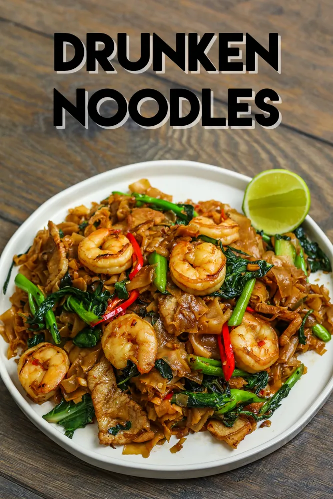

Drunken Noodle

What is Drunken Noodle?
Drunken Noodles is the literal translation of Pad Kee Mao because the theory is that these spicy Thai noodles should be eaten with an ice cold beer and that they are a great cure for hangover. I can confirm both cases to be true!
The dish is widely available in restaurants or at street vendors in Thailand but it is also highly popular in the United States, and has become ubiquitous on Thai restaurant menus throughout. Despite its name, alcohol is not one of the ingredients.
Ingredients
- Rice noodles
- Chicken
- Eggs
- Sesame oil
- Shallots
- Garlic
- Fresh Ginger
- Green Onions
- Basil
- Chili Sauce
- Fish Sacue
- Soy sauce
- Brown Sugar
- Oyster sauce
How to make Drunken Noodle
- Cook the rice noodles: according to package instructions. Drain, rinse with with water and set aside.
- Prepare the sauce: Mix sauce ingredients in a small bowl.
- Cook chicken and vegetables: Heat oil in wok or large skillet over high heat. Add shallots and carrot and cook for 2 minutes. Add more oil and cook chicken. Add garlic and ginger, add bell pepper, zucchini, and the whites of the chopped green onion and sauté.
- Add noodles and sauce: Toss and cook for a few minutes until warmed through. Remove from heat and stir in chopped basil.
- Serve immediately: garnished with remaining green onion and extra chili sauce, sriracha, or crushed red pepper, for added spice.